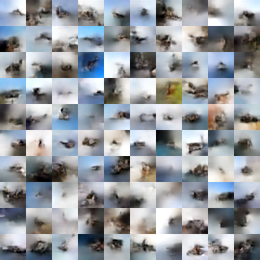
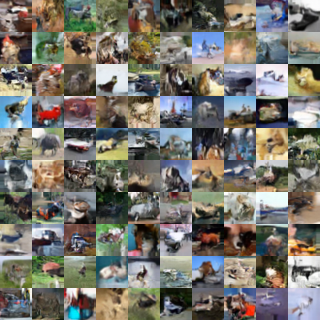

Revisiting normalizing flows

Fig 1: Samples from an unconditional model with affine coupling layers trained on the CIFAR-10 dataset with temperature 1.0 after 10 epochs (left) and 600 epochs (right) using Horovod (You can find our Dockerfile here).
If you recall from our previous discussion on Glow (Kingma and Dhariwal 2018), an attractive aspect of normalizing flows is that the exact log-likelihood of input data becomes tractable. As a result, the training criterion of a flow-based generative model is simply the negative log-likelihood (bits per dimension) over the training dataset :
What distinguishes flow-based generative models' capacity for exact inference versus other types of generative models? Simply, it's that flow-based models combine several fundamental concepts as a substrate for transforming distributions in a way that optimization of the log-likelihood is tractable. I'll review the motivation and implementation of a normalizing flow through the use of bijective functions.
Bijective functions
In deep learning, rich high-dimensional densities typically use invertible volume-preserving mappings or mappings with fast volume adjustments -- i.e. the logarithm of the determinant of the Jacobian has linear complexity with respect to dimensionality. For a given probability distribution , the density is:
where is an inverse transformation and is the determinant of the Jacobian.
We can then compute the log determinant of the Jacobian of the inverse transformation; we can also easily verify the "volume-preserving" property of the transformation:
Fortunately for us, libraries like TensorFlow
Probablility have already done some of
the heavy lifting by providing an extensive selection of different probability
distribution and bijector classes. Both the Distribution and Bijector
classes are used to comprise a TransformedDistribution, which models p(y)
given a base distribution (an instance of the Distribution class)
and an invertible, differentiable transform Y = g(X) (an instance of
the Bijector class), where g is a deterministic
diffeomorphism. The TFP
API declares three operations that characterize a Bijector:
Forward
Useful for turning one random outcome into another random outcome from a different distribution.
Inverse
Useful for "reversing" a transformation to compute one probability in terms of another.
log_det_jacobian(x)"The log of the absolute value of the determinant of the matrix of all first-order partial derivatives of the inverse function."
Thus, creating our bijector by subclassing `Bijector``:
import tensorflow_probability as tfp # forward transformation as instance method class Foo(tfp.bijectors.Bijector): def __init__(self, name="Foo"): super(Foo, self).__init__(inverse_min_event_ndims=1, name=name) def _forward(self, x): y_0 = x[..., 0:1] y_1 = x[..., 1:2] - y_0**2 - 1 y_tail = x[..., 2:-1] return tf.concat([y_0, y_1, y_tail], axis=-1)
Next, let's look at a simple example illustrating standard TransformedDistribution ops by constructing a Log-Normal distribution from a Normal distribution:
ds = tf.contrib.distributions log_normal = ds.TransformedDistribution( distribution = ds.Normal(loc=0., scale=1.), bijector = ds.bijectors.Exp(), name="LogNormalTransformedDistribution")
We've instantiated a TranformedDistribution with an Exp bijector and
Normal distribution with parameters loc = 0 and scale = 1
( and ,
respectively). It's worth noting that in TFP, we can start to initialize batches
of scalar-valued Normals (and other distributions) by broadcasting.
Affine coupling layers
As I mentioned, in the RealNVP (Real-valued Non-Volume Preserving; Dinh et al. 2017) paper normalizing flows are implemented by stacking a sequence of invertible bijective transformation functions. In each bijection , known as the affine coupling layer (ACL), the input dimensions are split into two parts:
- The first dimensions remain the same.
- The second part, to dimensions, undergo an affine transformation (“scale-and-shift”) and both the scale and shift parameters are functions of the first dimensions.
where and are scale and translation functions and both map . How would we go about coding this?
Let's decompose this in pseudo-code. The first component of the input dimension is straightforward since it's simply:
y[0,d] = x[0:d]
However, the second component requires that we scale-and-shift the last D-d units contingent on the first d units only, while the first d units are masked and left unchanged. In TensorFlow, this would look like:
y[d:D] = x[d:D] * tf.exp(log_scale_fn(x[0:d])) + shift_fn(x[0:d])